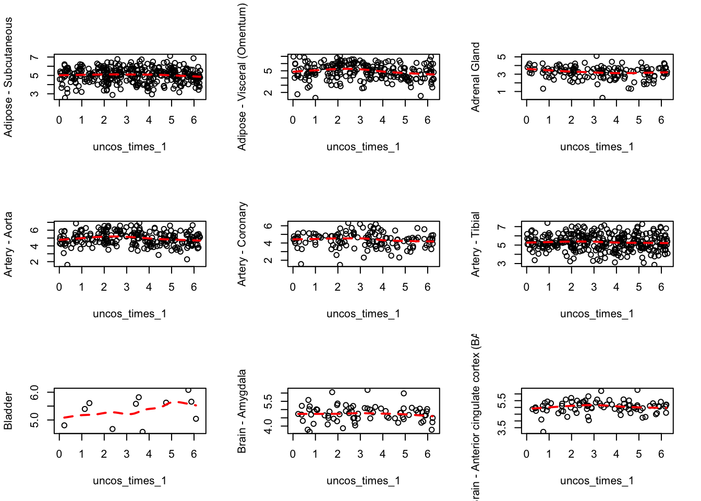
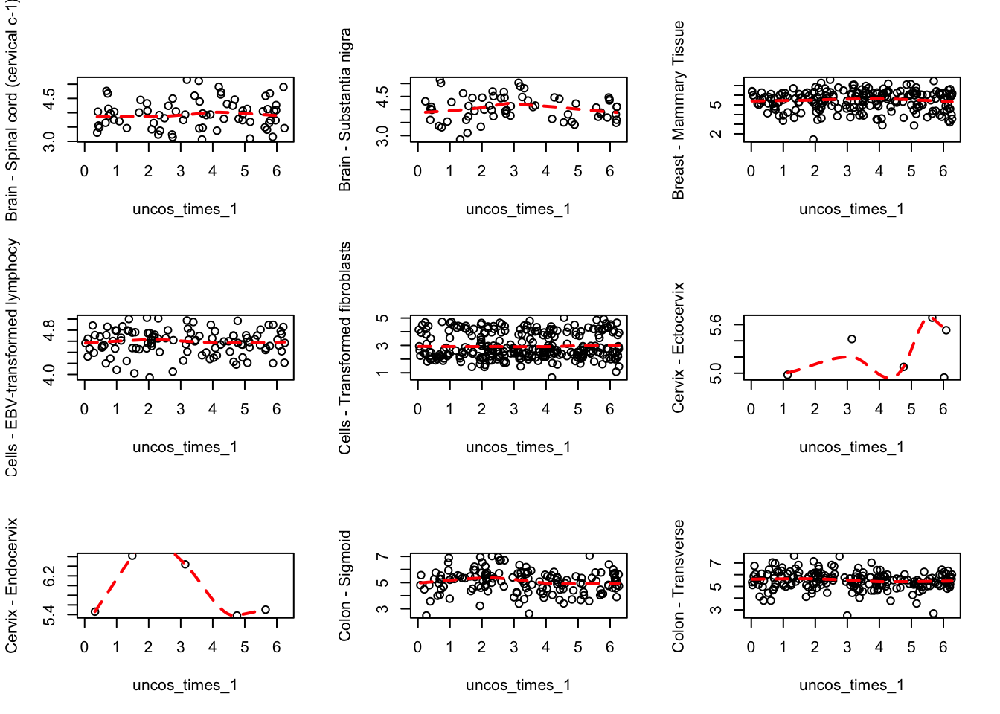
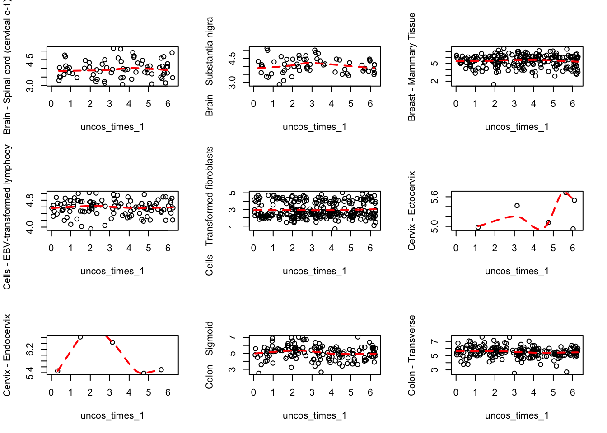
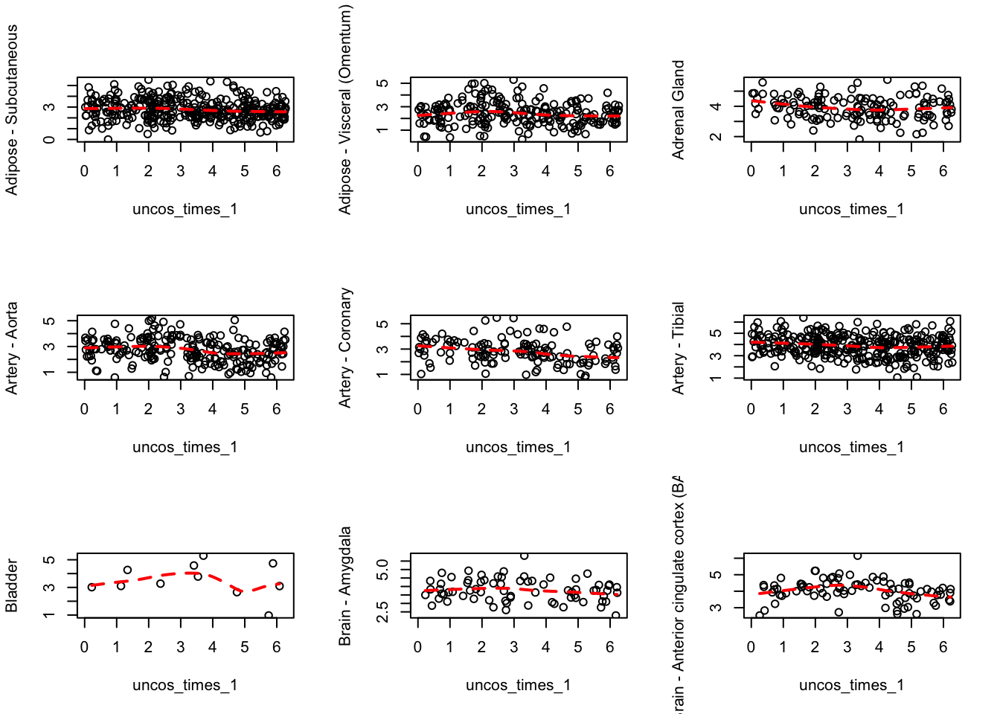
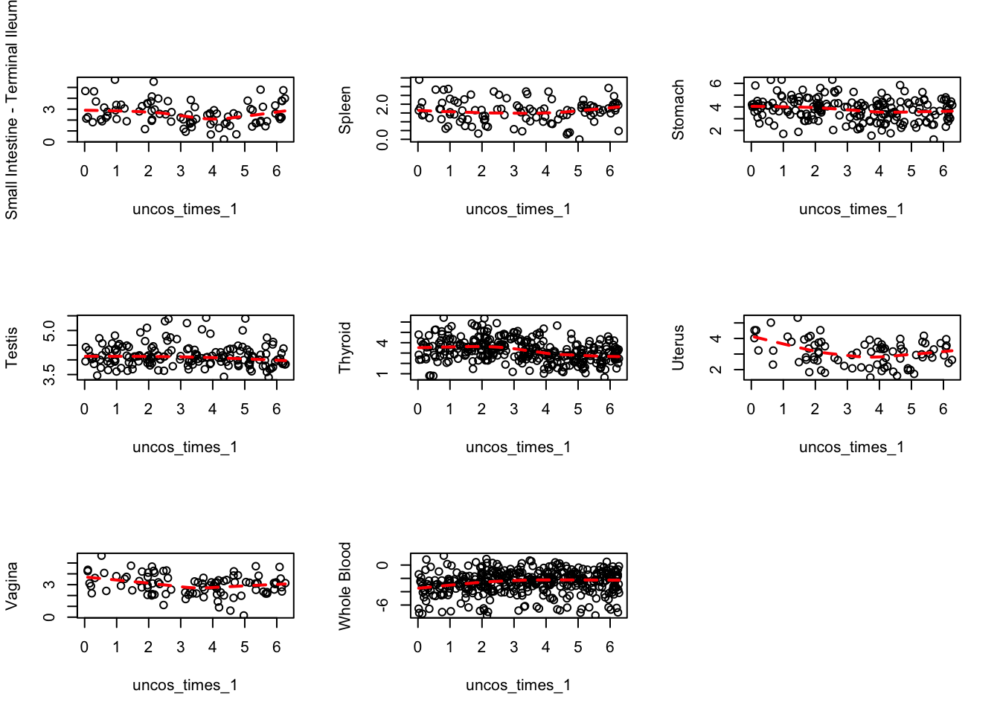
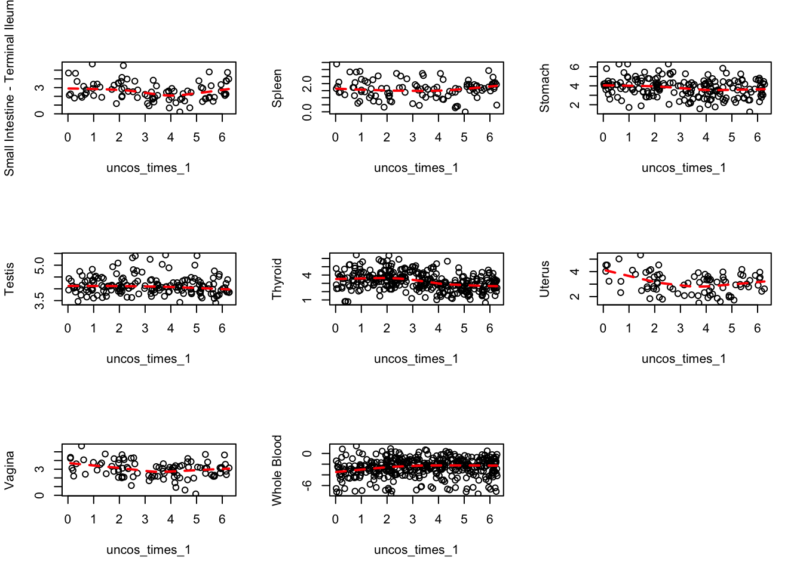
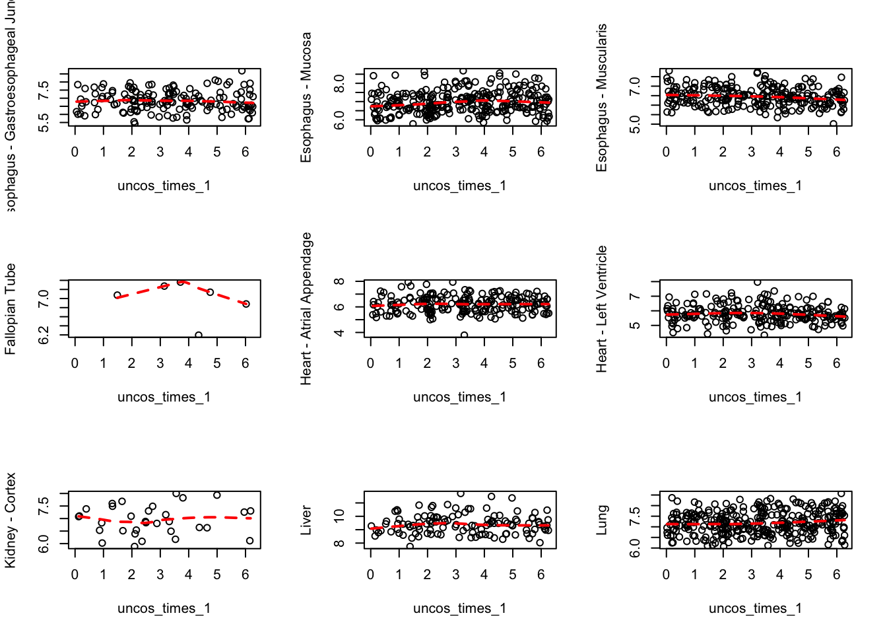

circadian rthym trajectory analysis
Kushal K Dey
6/4/2017
sample_attributes <- get(load("../output/sample_attributes_filtered.rda"))
person_tissue_genes <- get(load("../output/person_tissue_genes_voom.rda"))
betahat_sebetahat <- get(load("../output/death_time_cor_nonmash.rda"))
Death times and genes driven by death times
times <- strsplit(as.character(sample_attributes$DTHTIME), "[:]")
time_stamp <- unlist(lapply(times, function(x){
y <- as.numeric(x[1])
z <- as.numeric(x[2])
w <- y*60+z
return(w)
}))/(24*60)
cos_times <- cos(2*pi*time_stamp)
uncos_times <- 2*pi*time_stamp
na_indices <- which(is.na(cos_times))
person_tissue_genes_1 <- person_tissue_genes[-na_indices,,]
cos_times_1 <- cos_times[-na_indices]
uncos_times_1 <- uncos_times[-na_indices]
betahat_mat <- betahat_sebetahat$betahat
sebetahat_mat <- betahat_sebetahat$sebetahat
pval_mat <- betahat_sebetahat$pval
rsquare_mat <- betahat_sebetahat$rsquare
tmat <- betahat_mat/sebetahat_mat
abs_tmat <- abs(tmat)
column_sum_1 <- apply(abs_tmat, 2, function(x) return(quantile(x, 0.7)))
names <- dimnames(person_tissue_genes)[[3]][order(column_sum_1, decreasing = TRUE)[1:10]]
indices <- match(names, dimnames(person_tissue_genes)[[3]])
indices <- indices[!is.na(indices)]
ENSG00000133794
par(mfrow=c(3,3))
for(j in 1:53){
plot(uncos_times_1, person_tissue_genes_1[,j, indices[1]],
ylab = dimnames(person_tissue_genes)[[2]][j])
lines(loess.smooth(uncos_times_1,person_tissue_genes_1[,j, indices[1]]),
col="red", lty=2, lwd=2)
}

ENSG00000132326
par(mfrow=c(3,3))
for(j in 1:53){
plot(uncos_times_1, person_tissue_genes_1[,j, indices[2]],
ylab = dimnames(person_tissue_genes)[[2]][j])
lines(loess.smooth(uncos_times_1,person_tissue_genes_1[,j, indices[2]]),
col="red", lty=2, lwd=2)
}
 



ENSG00000159208
par(mfrow=c(3,3))
for(j in 1:53){
plot(uncos_times_1, person_tissue_genes_1[,j, indices[3]],
ylab = dimnames(person_tissue_genes)[[2]][j])
lines(loess.smooth(uncos_times_1,person_tissue_genes_1[,j, indices[3]]),
col="red", lty=2, lwd=2)
}

## Warning in simpleLoess(y, x, w, span, degree = degree, parametric =
## FALSE, : pseudoinverse used at 3.7088
## Warning in simpleLoess(y, x, w, span, degree = degree, parametric =
## FALSE, : neighborhood radius 1.0472
## Warning in simpleLoess(y, x, w, span, degree = degree, parametric =
## FALSE, : reciprocal condition number 0
## Warning in simpleLoess(y, x, w, span, degree = degree, parametric =
## FALSE, : There are other near singularities as well. 2.6064

 

a random gene
random_index <- sample(1:16069, 1)
par(mfrow=c(3,3))
for(j in 1:53){
plot(uncos_times_1, person_tissue_genes_1[,j, random_index],
ylab = dimnames(person_tissue_genes)[[2]][j])
lines(loess.smooth(uncos_times_1,person_tissue_genes_1[,j, random_index]),
col="red", lty=2, lwd=2)
}

This R Markdown site was created with workflowr